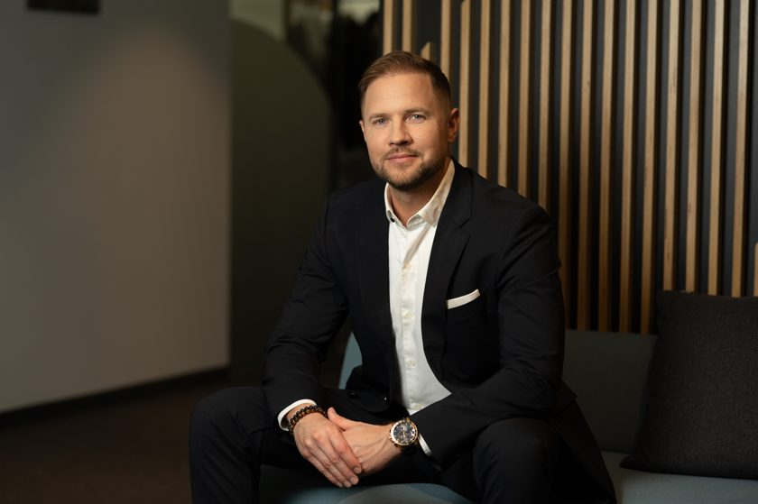

The situation
You have AI that works in a demo.
The question is whether it survives contact with real operations, with an auditor, with a bad day. In a regulated business, that gap is where money and reputation are lost.
The market is loud with AI enthusiasm. What helps is someone who has stood at this crossroads before and can tell you which way it usually goes.
Patterns
What I keep seeing.
The same few failures, across different firms and different use cases. None of them show up in the demo.
The demo is the cheap part.
The build gets quoted. Running it, monitoring it and answering for it does not. A feature that costs little to prototype can be expensive to operate safely in a business-critical system. Price a year of running it before you commit.
Nobody owns the running cost.
AI costs drift when no one is accountable for them. The largest model gets used for work a smaller one would handle. Context gets re-sent instead of reused. Experiments stay running in live systems. Put a number on cost per case before you scale, and read the bill every month.
Lock-in hides in the wiring.
Teams worry about picking the wrong model. The cost of leaving is rarely the model. It is the data, the prompts and the workflow wired so tightly to one vendor that moving means starting over. Keep a thin layer between your systems and any single provider, favour portable data and put exit terms in the contract.
The evidence gets built last.
Proof that the model works and proof that it complies are treated as two projects, and the second one starts after go-live. Build them as one deliverable. Under the EU AI Act and DORA that is the difference between a short conversation with an auditor and a long one.
Existing controls do not cover the new attack surface.
Prompt injection is the gap that surprises people: hidden instructions inside a document, a web page or a user message that push the model to act against your intent. Treat every input the model reads as untrusted, limit what it can do on its own and keep a person in the loop for anything that moves money or data. Convincing text, voices and images are cheap to produce now, so identity checks that once relied on appearances need rethinking.
No one took a baseline.
The gain is real and it cannot be shown. Decide what you are measuring before you start, measure the same thing after and count the cost of building and maintaining it. A return your finance team would sign off without conditions is the only kind that counts.
AI gets added to a broken process.
That gives you a faster broken process. Map how the work flows today, find the step where volume, delay or error accumulates and redesign the flow around what the model does well. Keep your people on the judgment and the exceptions.
What you get
Two steps, in order.
First · my read of the situation
You bring a real decision. I tell you where you are, what is normal for a firm at your stage and the crossroads you are actually standing at. What I have seen go right and wrong, applied to your situation in an hour.
Then · specialist depth
When a decision earns it, I bring the right specialist from a multidisciplinary team. Domain, validation, compliance and engineering, on call when your decision needs them. Proof and controls get built together, one deliverable that serves validation and compliance at once.
The honest part
Sometimes the answer is no.
Sometimes the honest read is to wait, or to walk away. A retained partner can say that and keep the seat. My fee is the same whether you build or hold, so nothing is pulling me toward a yes.
That is the point of the seat.
How it starts
How it starts.
The first session is where we both decide whether a seat makes sense. You bring one real decision you are facing now. You leave with a clear view of where you are and what to do next, whether or not we go further. The first session carries no fee. What it asks of you is a real decision and an honest hour.
If it earns a standing seat, we continue month to month. One working session a week. On-call access between. A fixed monthly fee, from 5000 EUR. Cancel anytime. You stay for as long as it is useful.
Scope
What I do not do.
The seat is judgment you can act on. When you decide to build or scale, Helmes takes it from there as the firm.
The read is experienced advice to inform your decision. Your formal compliance sign-off and legal advice come from the specialists you already retain for those.
Who I am

Who I am.
I am Allan Valm, a Business Area Leader at Helmes, a software group of around 1,500 people across the Baltics and beyond. Watching business-critical software succeed and fail taught me to read the difference early.
The seat is me. When you decide to build, Helmes delivers as the firm. You get one person's judgment with an institution behind it.
Track record
Where this comes from.
Twenty years in business-critical software, most of it in regulated industries.
Helmes · 2025 to now
I lead two product teams building AI-augmented workflows and business-critical systems for regulated clients, among them the Estonian Tax and Customs Board, the Ministry of Foreign Affairs and Enterprise Estonia.
Digital Elegance · 2023 to now
With Enterprise Estonia I have run a four-year service design masterclass for eighty Estonian companies, including teams at the Port of Tallinn. The work was helping them design and validate B2B services before committing to build them.
Mobi Lab · 2017 to 2023
I led product teams delivering software for Telia, Inbank, Veriff and Apollo Group. I also founded Reality Maker, an augmented reality platform for education, secured over 600,000 EUR in funding and scaled it with Ericsson into the US and UK. Those decisions were mine to make and mine to answer for.
Inbank · 2015 to 2017
I built and led the bank's first software development team. The processes we put in place passed external compliance audits on the first attempt. Its first deposit product launched in three months, met its financial goals within two weeks and scaled to Poland and Latvia within six months.
Playtech · 2010 to 2014
I led the design of responsible-gambling and loyalty features for a casino management platform used by Coral, Ladbrokes and William Hill. A testing framework I introduced cut defects by half across major releases.
The first session
The questions I will ask you.
These are the questions the first session works through. Take them into your own meeting and use them without me.
What decision are you actually making, and by when?
Many AI conversations contain no decision at all. Naming it changes what the room talks about.
What happens when the model is wrong?
How often, how visibly and what it costs. Every model is wrong sometimes, so plan for the day it is.
Who answers for it?
A named person, not a committee. Regulated work needs someone accountable for the outcome.
What would you have to show an auditor, and could you show it today?
Under the EU AI Act and DORA this question arrives late and costs the most when it does.
What does a year of running this cost?
The build gets quoted. The cost of operating, monitoring and fixing it rarely does.
Who owns it once it is live?
Models drift and data changes. Watching for that is a standing job, and it needs an owner.
What would make you stop?
Agree the answer before you start. It is the hardest question here and the most useful one.
If the answers come easily, you are in better shape than most. If two or three of them stall, that is the conversation worth having.
One decision. One session.
Bring the AI decision that is keeping you awake at night. Leave knowing where you stand. There is nothing to pitch. Move faster without losing control.
Bring one decision